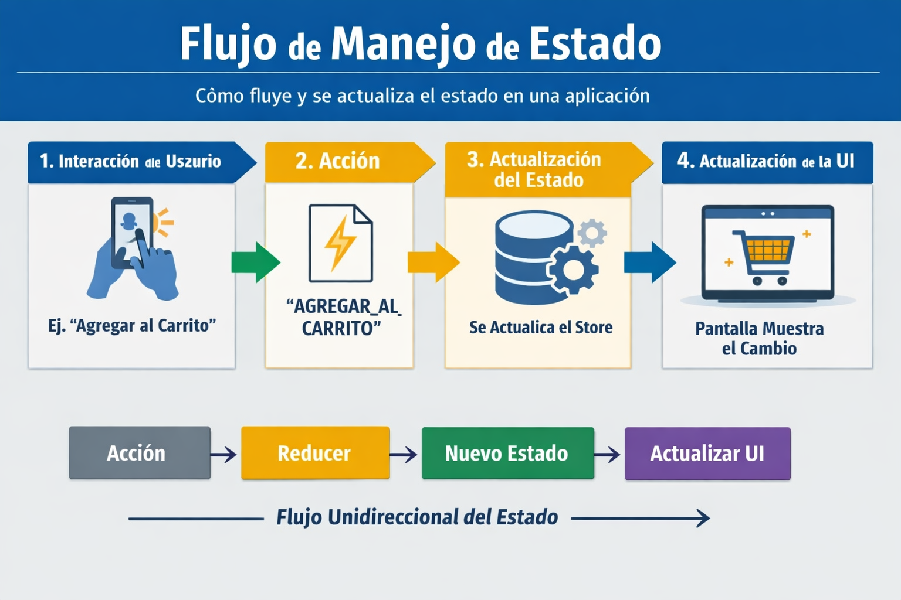
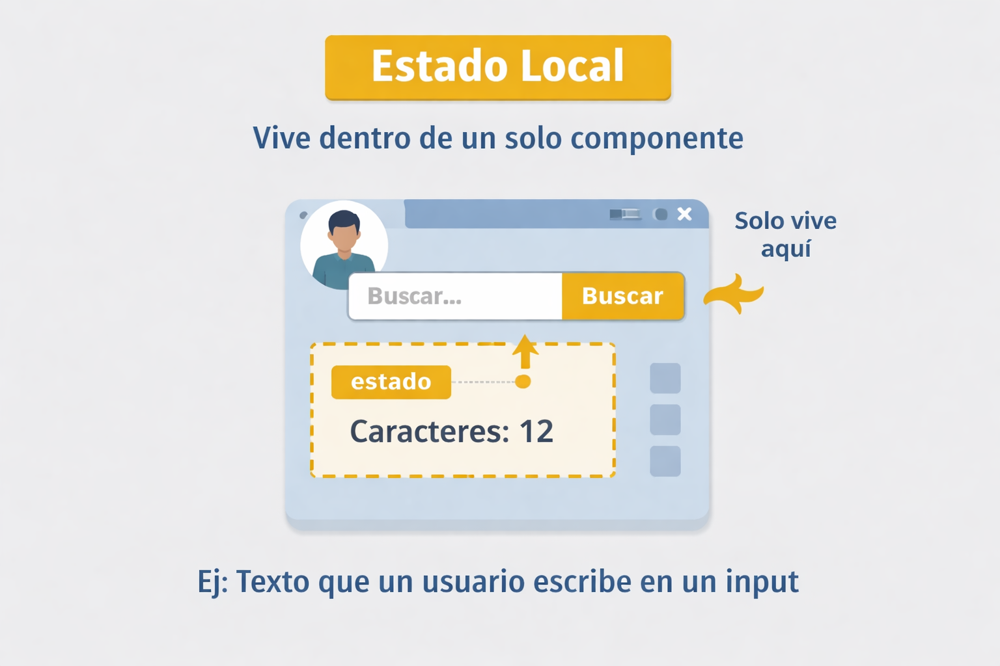
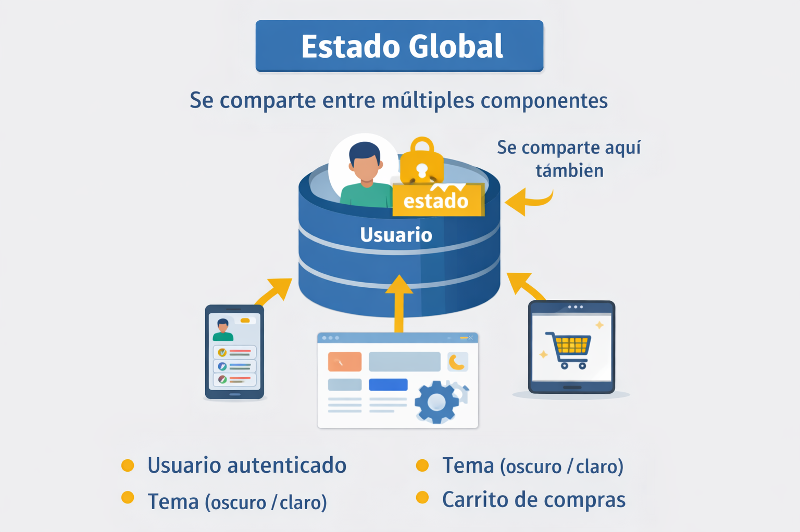
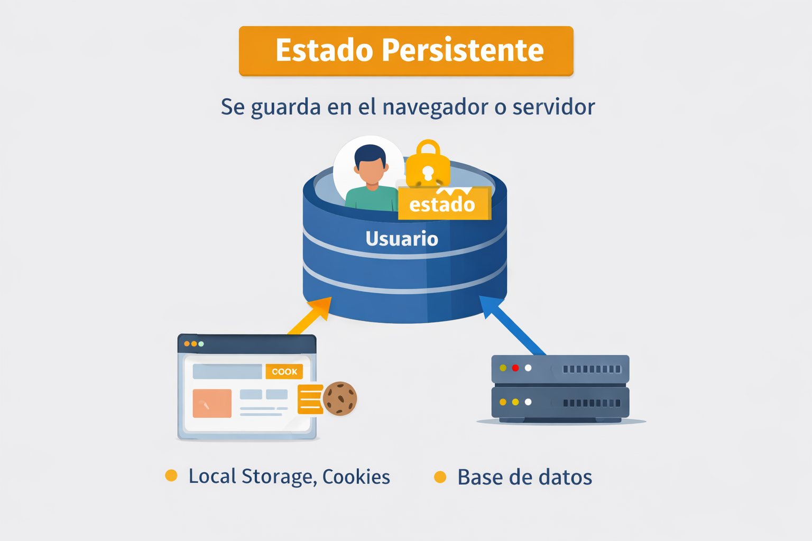

¿Qué es el Estado?
El estado es toda la información que una aplicación necesita para funcionar en un momento determinado. Controla cómo se muestran y actualizan los componentes.
Ejemplos de estado
- Un usuario logueado (nombre, correo)
- Un carrito de compras (productos, cantidades)
- Un formulario (datos ingresados)
- Un contador (valor actual)
- Datos cargados desde una API
¿Qué es manejo de estado?
Es la forma en que una aplicación controla, actualiza y comparte los datos que representan su “estado” en un momento dado.

Ejemplo Interactivo
Haz clic en el botón para cambiar el estado:
Estado actual: Inactivo
Tipos de Manejo de Estado
Estado local
Son los datos que pertenecen a un solo componente o módulo.

Estado global
Son los datos compartidos entre varios componentes. Ejemplo: el usuario autenticado en toda la aplicación.

Estado persistente
Son los datos que se guardan en almacenamiento externo (base de datos, localStorage) para que no se pierdan al cerrar la aplicación.

¿Por qué es importante?
- Organización: Evita que los datos se desordenen en aplicaciones grandes.
- Consistencia: Garantiza que todos los componentes muestren la misma información.
- Escalabilidad: Permite que la aplicación crezca sin volverse caótica.
- Experiencia de usuario: Asegura que las interacciones sean fluidas y predecibles.